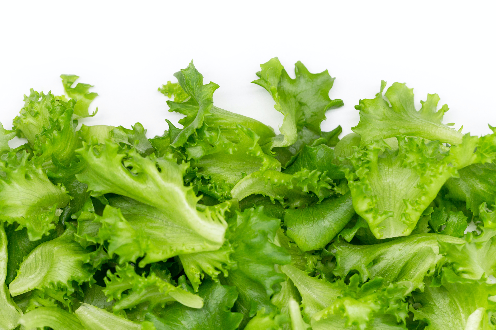

About Lettuce
Lettuce is a popular leafy green vegetable that is often used as the base for salads. It comes in various types, including iceberg, romaine, and butterhead, each with its own flavor and texture. Lettuce is a cool-season crop that is easy to grow and a nutritious addition to a balanced diet.
Steps to Grow Lettuce
- Choose a location with well-drained soil and partial shade for lettuce cultivation.
- Plant lettuce seeds or seedlings in rows or containers, ensuring proper spacing.
- Water the lettuce consistently, keeping the soil evenly moist but not waterlogged.
- Provide shade during hot weather to prevent lettuce from bolting (going to seed prematurely).
- Fertilize the soil with a balanced fertilizer to promote healthy leafy growth.
- Harvest lettuce by cutting the leaves when they reach a suitable size, typically 4-6 inches.
Extra Information
Lettuce is not only low in calories but also a good source of vitamins and minerals. It can be enjoyed in various dishes beyond salads, including sandwiches and wraps. Lettuce is an excellent choice for container gardening and can be grown year-round with proper care. Explore different lettuce varieties to add variety to your meals.